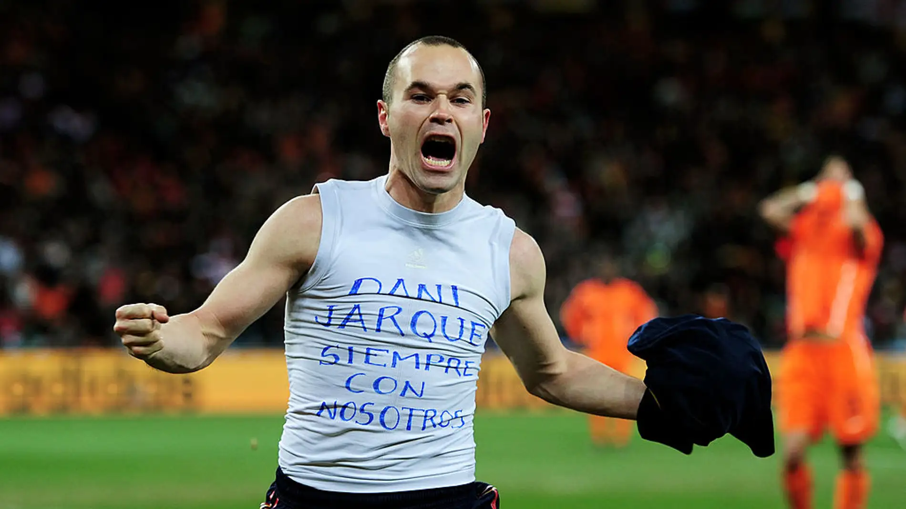

Andres iniesta es uno de los futbolistas mas destacado de la historia del futbol español y mundial. Nacio el 11 de mayo de 1984 en su querido pueblo llmado Fuente Albilla un pueblo que esta en la provincia de Albacete. Desde joven mostró un gran talento para el fútbol y se unió a la academia del FC Barcelona, conocida como La Masía, a los 12 años.
Iniesta también tuvo un papel crucial en la selección española. Formó parte del equipo que ganó la Eurocopa en 2008 y más notablemente, fue el autor del gol que le dio a España su primer título de Copa del Mundo en 2010, en la final contra los Países Bajos. Este logro consolidó a Iniesta como un ícono del fútbol español.
En 2018, Iniesta dejó el Barcelona después de 16 temporadas y se unió al Vissel Kobe en Japón, donde continuó jugando hasta su retirada. Su legado no solo se basa en los títulos ganados, sino también en su estilo de juego y su humildad.
